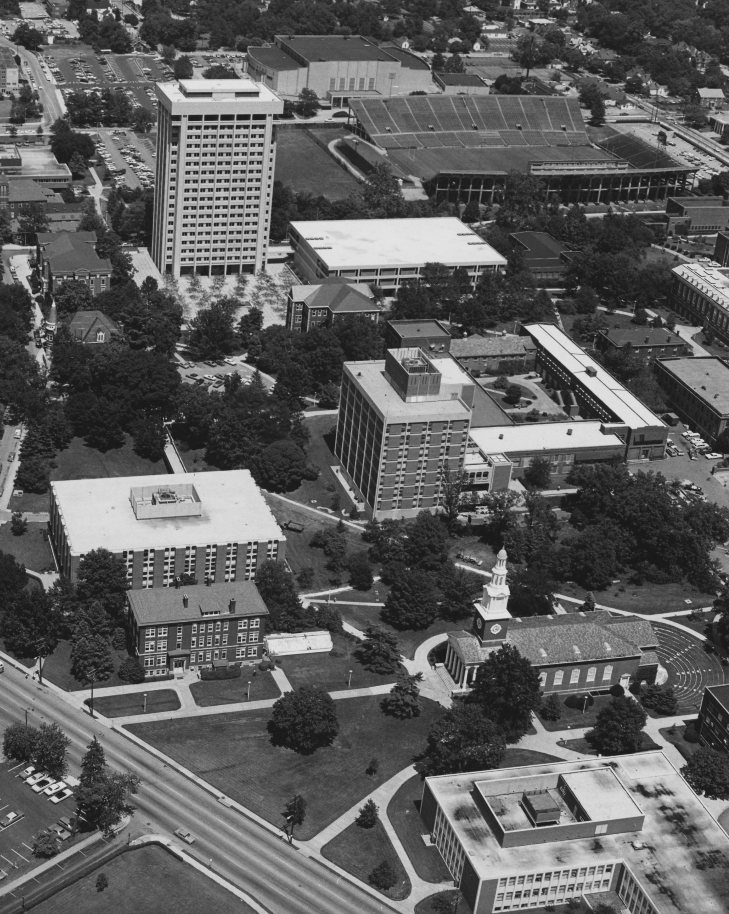

Caption for Cesium slideshow
Brief, yet bold title for project
Subtitle with when and where
Left Column - Description
Two sentences about your area/theme of interest (e.g., when was it established, created, where is it, what is unique about, etc.)
Two sentences about the goals of the project (e.g., The goal of this project is to measure and visualize the historic entrance to Mammoth Cave).
POT in 1973. Explore
Historic images from the UKy Libraries Special Collections.
Visualizations created from lidar data provided by KyFromAbove in ArcGIS Pro and Blender. Additional sources of information from name of source, April, 2023.
Page and visualizations created by B for GEO 409, Department of Geography, University of Kentucky. Spring 2023.